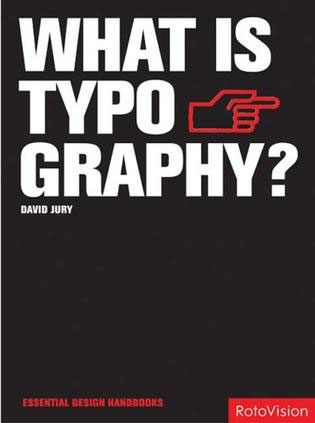

WHAT IS TYPOGRAPHY?
Design:David Jury
Measures:16K
Binding:256pp., Hardback
color photographs,
Text in English
Date:2006
ISBN:978-981-245-356-3
Subject:GRAPHIC DESIGN
Publisher:PageOne (Singapore)
Description:Description Explores the formal structures and acceptable variations of type as fundamental disseminators of information. This work looks at how different media, and consequent reproduction processes, underpin every aspect of typographic design. It is suitable for student designers as well as professionals in the field.
This unparalleled handbook explores the formal structures and acceptable variations of type as fundamental disseminators of information. It also uncovers the various ways in which typographers - as well as linguists, psychologists, philosophers, and information designers - have applied studies in this area. 'What is Typography?' breaks down the anatomy of typography to explore tools and processes, methods of organizing the mechanics of type, and the various means of arranging and displaying type. It also looks at how different media, and consequent reproduction processes, underpin every aspect of typographic design. Beyond academic analysis of the subject, 'What is Typography?' celebrates work from the vanguard of typographic design, showcasing an impressive, eclectic portfolio from the world's foremost practitioners. This book is a key resource for student designers as well as professionals in the field.
Price: гд 240 RMB
(Only for Chinese market)
